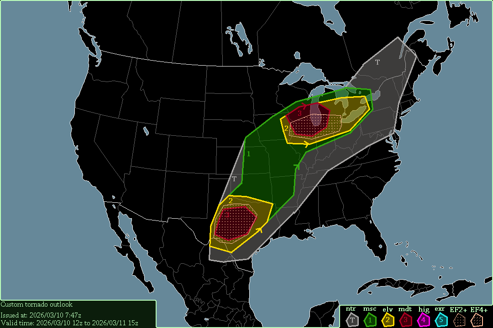

A level 3 moderate risk exists in Texas, starting at 12:00 UTC, 2026/03/10.
A level 3 moderate risk also exists in southern Wisconsin, northern Illinois, & western Michigan, also starting at 12:00 UTC.
Severe thunderstorms are expected surrounding all tornado risks, also starting at 12:00 UTC.
2 possible tornado-outbreaks are expected; one in central Texas, & one in the central Midwest. That in the Midwest is more high-end moderate, while Texas is regular moderate. In Texas, 0-1km SRH reaches 200 m²/s², so at-least 1 tornado is definitely occurring there today. 0-3km SRH is also good, at 300-400 m²/s². CAPE in Texas reaches 1000-1500 J/kg, which is good to support severe thunderstorms, & further aids tornado potential.
The Midwest has even more severe conditions, especially 0-1km SRH reaching 300-400 m²/s² in southern Wisconsin & southern Michigan, which will definitely support multiple tornadoes. 0-3km SRH is also crazy, at 400-500 m²/s in that area. CAPE in northern Illinois will likely reach 2000 J/kg, very supportive of severe weather, & will definitely increase tornado potential. I would not be surprised if multiple EF2+ tornadoes occurred in the Midwest today, but that is not guaranteed.
-- Cenn Devel, 2026/03/10 8:05z.